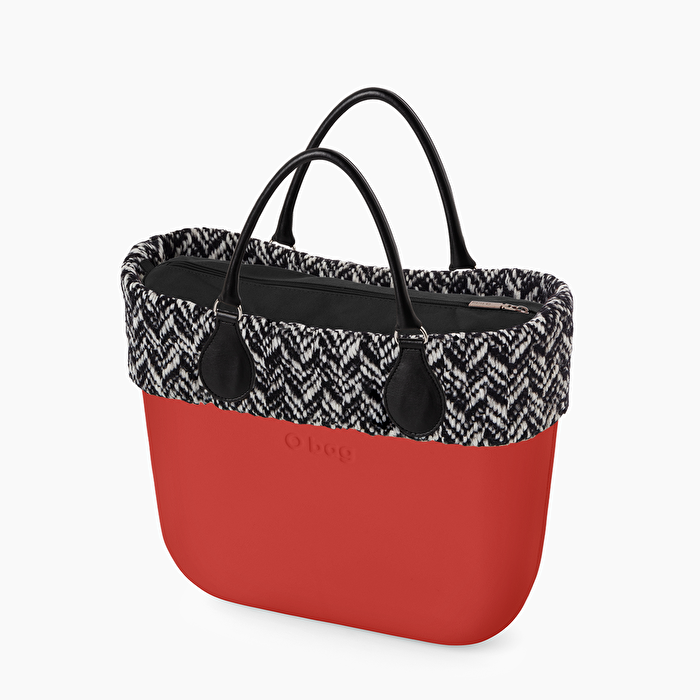

O bag
O bag bianca con sacca interna
€86,30
Il manico lungo componibile latte basic rappresenta un classico della collezione O bag Autunno 2019. Realizzato in ecopelle, è l’ideale per un utilizzo a spalla della tua borsa O bag. Se stai cercando un modo di personalizzare la tua O bag che rappresenti la praticità con cui ami interpretare il tuo stile, il manico lungo componibile latte basic può essere una delle soluzioni più adatte. Per sapere come fissare il manico lungo componibile latte basic alla scocca della tua O bag puoi consultare il manuale di montaggio O bag.

O bag
O bag ice camouflage
€116,80
La sacca interna nera tela O bag è uno tra gli accessori indispensabili di questa stagione. Realizzata in tessuto canvas, è leggera e resistente e si chiude con una zip. La puoi scegliere in tanti divertenti colori per un effetto a contrasto o tono su tono. Ogni O bag può essere personalizzata attraverso manici, tracolle, bordi e sacche interne. La sacca interna nasce per proteggere la tua borsa ed il suo contenuto e puoi sceglierla nel materiale, colore e forma che più rispecchia il tuo stile. L'immagine della sacca interna nera tela O bag è indicativa. L'articolo potrebbe subire delle variazioni durante la produzione.

O bag
O bag ghiaccio con bordo eco pelliccia nera
150,00
La sacca interna bianca tela O bag è uno tra gli accessori indispensabili di questa stagione. Realizzata in tessuto canvas, è leggera e resistente e si chiude con una zip. La puoi scegliere in tanti divertenti colori per un effetto a contrasto o tono su tono. Ogni O bag può essere personalizzata attraverso manici, tracolle, bordi e sacche interne. La sacca interna nasce per proteggere la tua borsa ed il suo contenuto e puoi sceglierla nel materiale, colore e forma che più rispecchia il tuo stile. L'immagine della sacca interna bianca tela O bag è indicativa.
